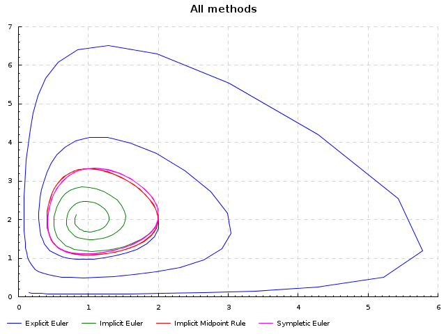
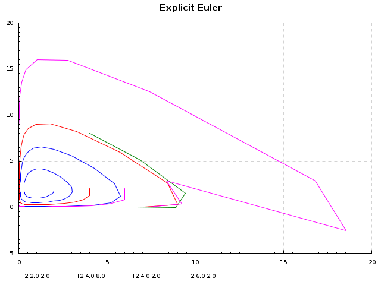
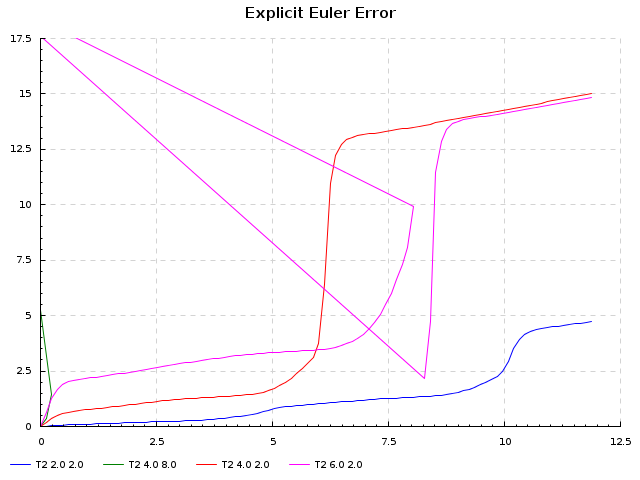
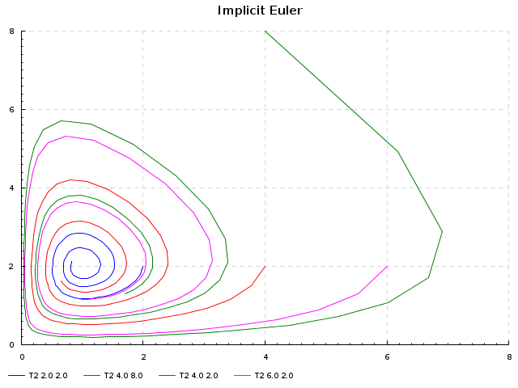
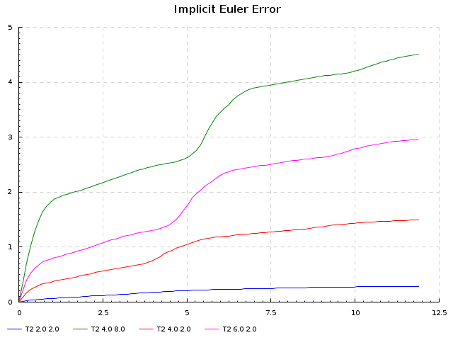
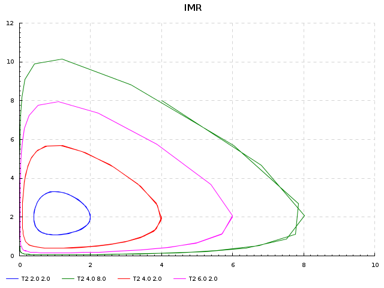
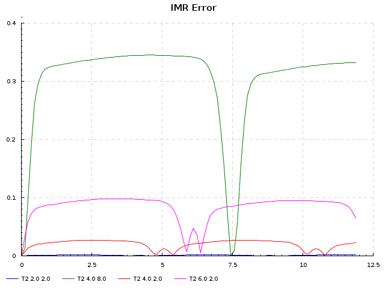
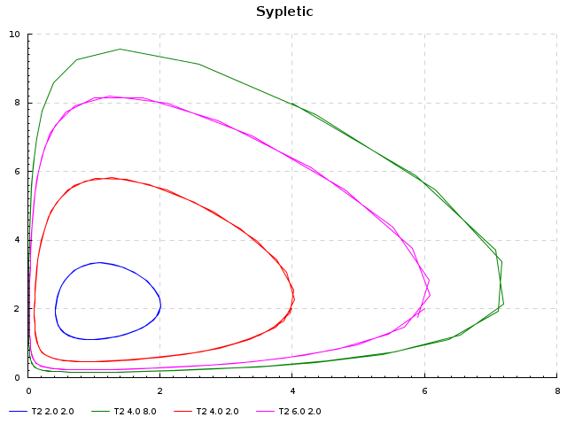

by qnikst on 2012-01-05
Наконец-то нашёл в себе силы и немного времени начать новый проект на haskell. Решалку ODE, в принципе этих решалок и так дофига, но мне оказались нужны определенные хитрые алгоритмы многие их, которых строятся на функциях высшего порядка, и писать их на c/fortran/matlab было бы достаточно грустно, а известные реализации с трудом прикладываются к моим задачам. В общем надеюсь, что-то путное выйдет. Если кому интересно и кто видит явные косяки буду рад любым замечаниям.
Страница проекта: odessolver
Немного о том, как всё будет работать все методы работают на основе интегратора (функции для каждой системы, которая по шагу и начальной координате возвращает следующую). В целом видно, что существуют и более сложные варианты, напр. возвращение следующей координаты и нового интегратора, но это уже потом.
Ну и для разминки привожу, пример, простейших учебных методов (Examples/LottkaVolterra.hs), собственно весь этот пост является .lhs файлом и может быть запущен, похоже, что в решении есть косяк, но пока я ещё не разобрался с тем проблема в исходном коде или в коде какой либо из используемых библиотек.
> {-# LANGUAGE FlexibleInstances, BangPatterns, TypeFamilies #-}
> module Examples.LottkaVollterra
> where
First we import some stuff that we will use for compulations.
All computations will run it ST monad and we will use Vector
to store results, it not the most effective way to do it in
haskell but it is quite common in numerical engines (like Octave,
Matlab, etc.)
For generazation of algorithms on arbitrary space we'll use
VectorSpace.
> import Prelude hiding (sequence)
> import Control.Monad.ST
> import Control.Monad
> import Data.Vector (Vector,(!))
> import qualified Data.Vector as V
> import Data.AdditiveGroup
> import Data.VectorSpace
Then we import some stuff for plotting graphs
> import Data.Accessor
> import Graphics.Rendering.Chart
> import Data.Colour.Names
> import Data.Colour
And now our main part
> import Math.Integrators
> import Math.Integrators.ExplicitEuler
> import Math.Integrators.ImplicitEuler
> import Math.Integrators.ImplicitMidpointRule
> import Math.Integrators.SympleticEuler
First model will be Lotka-Volterra model, that was used to
estimate predators-prey number
[1] http://en.wikipedia.org/wiki/Lotka%E2%80%93Volterra_equation
\begin{equation}
\left\{
\begin{array}{ccc}
\dot{u} & = & u (v - 2) \\
\dot{v} & = & v (1 - u)
\end{array}
\right.
\end{equation}
To store our $R^2$ space we'll use special data type, that is
strict and has fixed size
> data T2 = T2 !Double !Double
> deriving (Eq,Show)
To be able to use it we need to make it instance of vector space:
> instance AdditiveGroup T2 where
> zeroV = T2 0 0
> negateV (T2 x y) = T2 (-x) (-y)
> (T2 a1 a2) ^+^ (T2 b1 b2) = T2 (a1+b1) (a2+b2)
> instance VectorSpace T2 where
> type Scalar T2 = Double
> c *^ (T2 a1 a2) = T2 (c*a1) (c*a2)
Now let's define our equation:
> lv :: T2 -> T2
> lv (T2 u v) = T2 (u * (v-2)) (v * (1-u))
Create initial condition list (maybe I'll use it)
> ics = [ T2 2 2, T2 4 8, T2 4 2,T2 6 2]
Create initial conditions for testing purposes
> ic = T2 2 2
That LV equation has next first integral that should be preserved:
> realline :: T2 -> Double
> realline (T2 u v) = (log u) - u + 2*(log v) -v
Define a function that find difference in first integrals (i.e. error)
> errorV ic v = V.map (\x -> abs $! (realline x) - (realline ic)) v
We'll use solve equation from 0 to 100 with 0.12 step
> tm = V.enumFromStepN 0 0.12 100
Our solvers:
> solve1 ic tm = runST $ integrateV (explicitEuler lv) ic tm
> solve2 ic tm = runST $ integrateV (implicitEuler lv norm) ic tm
> solve3 ic tm = runST $ integrateV (imr lv norm) ic tm
some results:
> result1 = solve1 ic tm
> result2 = solve2 ic tm
> result3 = solve3 ic tm
to use sympletic method we should redefine out equation
in this place I really need an advice how to do it implictly in terms
of First Order functions
> splitIc :: T2 -> (Double,Double)
> splitIc (T2 u v) = (u,v)
> splitLv :: ((Double -> Double -> Double),(Double->Double->Double))
> splitLv = (\u v -> u*(v-2), \u v -> v*(1-u))
> solve4 ic tm = runST $ integrateV (sympleticEuler1 splitLv abs) (splitIc ic) tm
> result4 = solve4 ic tm
Some helpers: norm on T2 space
> norm :: T2 -> Double
> norm (T2 a b) = a*a+b*b
Now lets create charts:
first: plot all graphs on the same plot:
> plot1 = renderableToPNGFile (mychart) 640 480 "all.png"
> where
> mychart = chart "All methods" lst
> lst = [("Explicit Euler", blue, f solve1)
> ,("Implicit Euler", green, f solve2)
> ,("Implicit Midpoint Rule", red, f solve3)
> ,("Sympletic Euler", magenta, f' solve4)]
> f g = v2d $! g ic tm
> f' g = V.toList $! g ic tm
> plotI fn nm f ics = renderableToPNGFile (mychart) 640 480 fn
> where
> mychart = chart nm lst
> lst = zipWith3 (\x y z -> (x,y,z)) (map show ics) [blue,green,red,magenta,orange] (map f ics)
> plotE fn nm f ics = renderableToPNGFile (mychart) 640 480 fn
> where
> mychart = chart nm lst
> lst = zipWith3 (\x y z -> (x,y,z)) (map show ics) [blue,green,red,magenta,orange]
> (map (\i -> zipWith (,) (V.toList tm) (V.toList $! errorV i $! f i)) ics)
> plot2 = plotI "1.png" "Explicit Euler" (v2d . (flip solve1 tm)) ics
> plot3 = plotI "2.png" "Implicit Euler" (v2d . (flip solve2 tm)) ics
> plot4 = plotI "3.png" "IMR" (v2d . (flip solve3 tm)) ics
> plot5 = plotI "4.png" "Sypletic" (V.toList . (flip solve4 tm)) ics
> plot6 = plotE "1e.png" "Explicit Euler Error" (flip solve1 tm) ics
> plot7 = plotE "2e.png" "Implicit Euler Error" (flip solve2 tm) ics
> plot8 = plotE "3e.png" "IMR Error" (flip solve3 tm) ics
> --plot7 = plotE "2e.png" "Implicit Euler Error" (flip solve2 tm) ics
> chart tit lst = toRenderable layout
> where
> plotList = map (Left . toPlot . mtp) lst
> mtp (tit,clr,dt) = plot_lines_style .> line_color ^= opaque clr
> $ plot_lines_title ^= tit
> $ plot_lines_values ^= [dt]
> $ defaultPlotLines
> layout = layout1_plots ^= plotList
> $ layout1_title ^= tit
> $ defaultLayout1
> v2d = (map (\(T2 x y) -> (x,y))) . V.toList
> main = plot1 >> plot2 >> plot3 >> plot4 >> plot5 >> plot6 >> plot7 >> plot8а для осиливших немножно незжатых картинок:
       